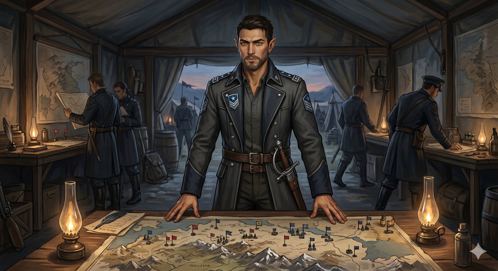

Appears in: Couch Potato Crisis
Profile

- Appears in: Couch Potato Crisis
- Aliases: Kegan, General Kegan
- Class: Time Mage
- Race: Half-elf (half-human, half-elven)
- Personality: Kegan is a calculating strategist who treats warfare as an exercise in cold arithmetic – lives spent against objectives secured, acceptable losses weighed against unacceptable defeats. His philosophy of command is summarized in his own words: “Leaders must always choose the greater good, every single time.” This utilitarian mindset makes him willing to order actions that others would consider morally unacceptable, including sacrificing individuals for strategic advantage. He does not enjoy cruelty but does not flinch from it when the math demands it. His half-elven identity places him between two worlds – too human for elven society, too elven for human – and this liminal position has shaped both his strategic detachment and his drive to prove himself through results rather than belonging. He is disciplined, composed under pressure, and speaks with the measured precision of someone who has learned to think several moves ahead before opening his mouth. His mastery of time magic reflects his personality: he perceives the world in accelerated frames, constantly ahead of the present moment, seeing outcomes before others have finished registering the situation.
- Backstory: Kegan is a half-elf – born of mixed human and elven heritage, a lineage that carries social disadvantage in both communities. In Etheria’s racially stratified societies, half-elves frequently find themselves excluded from full acceptance by either parent culture. Kegan channelled this outsider status into military ambition, rising through the ranks of whatever command structure accepted his talent regardless of his bloodline. His time-magic training gave him a decisive strategic edge: the ability to accelerate his subjective perception until the world appears nearly frozen (Cron’x Lux) and to briefly accelerate allies in combat (Cron’x Mortis). These abilities, combined with warp magic for rapid troop deployment, made him an exceptionally effective field commander. He achieved the rank of general and was assigned to lead or co-lead the military campaign against Zhakara following Kiwi’s abduction. The chapter titled “Sibling Rivalry” indicates a significant personal conflict with his sister, suggesting that family tensions – possibly rooted in their differing responses to their mixed heritage or divergent loyalties – complicate his professional life.
- Significant story events:
- The Secret of Wombat Island (Crisis): Kegan is present during the negotiations at Wombat Island, the pirate-controlled base where Tasha’s party seeks out [Captain K’her Noálin](./character-captain-k-her-no-lin.html). This is likely where the military alliance between Kegan’s command and K’her’s pirate forces takes shape, combining strategic planning with pirate firepower for the Zhakaran campaign.
- The Pirate and the General (Crisis): A chapter centred on the dynamic between Kegan and Captain K’her – two commanders with vastly different backgrounds and methods who must cooperate against a common enemy. Kegan demonstrates Cron’x Lux here, his signature spell that accelerates his subjective frame of reference until the rest of the world appears almost frozen. The chapter explores how a disciplined general and a rogue pirate find common ground in opposition to Murderjoy.
- Beachhead (Crisis): Kegan is involved in the establishment of a forward operating base for the Zhakaran campaign, likely coordinating the military logistics of turning McBreakfast Sandwiches and surrounding positions into a functional staging ground for deeper strikes.
- Into Zhakara (Crisis): Kegan accompanies or directs the advance into Zhakaran territory. His warp magic enables rapid troop movement, and his strategic thinking shapes the approach to penetrating enemy lines. He defends the philosophy of strategic sacrifice here, framing ruthless decisions as the necessary burden of wartime command.
- Sibling Rivalry (Crisis): A chapter exploring Kegan’s conflict with his sister – the nature of the rivalry is rooted in their personal history, potentially tied to their shared half-elven identity, differing allegiances, or opposing approaches to the war. This is Kegan’s most personally revealing chapter.
- Assault on Ironfall (Crisis): Kegan commands or co-leads the military assault on Ironfall, the major Zhakaran city seized by the masked Knight of Entropy. This is the largest conventional military operation in the Crisis arc, requiring the coordination of Tasha’s party, K’her’s pirates, and whatever regular forces Kegan commands.
- The End of Zhakara (Crisis): Kegan participates in the climactic battle that collapses Zhakara as a kingdom, contributing his time magic and strategic command to the final confrontation with Murderjoy’s forces.
- Notable Quotes:
“Leaders must always choose the greater good, every single time.” — Into Zhakara (Crisis). Kegan defends strategic sacrifice as part of wartime command responsibility, articulating the utilitarian philosophy that defines his approach to leadership. [Two additional quotes are attributed to Kegan in chapters The Pirate and the General and Sibling Rivalry but are not individually recorded in the wiki’s Notable Quotes section. These would need to be sourced directly from the book text.]
- Relationships:
- [Captain K’her Noálin](./character-captain-k-her-no-lin.html) (uneasy ally): The pirate and the general form an unlikely but effective partnership during the Zhakaran campaign. Their differing temperaments – Kegan’s disciplined calculation versus K’her’s chaotic pragmatism – create both tension and互补 effectiveness. The chapter “The Pirate and the General” is devoted to exploring this dynamic.
- Kegan’s sister (rival): The subject of the “Sibling Rivalry” chapter. The nature of their conflict is personal and significant enough to warrant its own chapter, suggesting deep-seated tensions – potentially rooted in their shared half-elven identity, divergent life choices, or opposing sides in the broader conflict.
- [Tasha Singleton](./character-tasha-singleton.html) and the rescue party (military allies): Kegan works alongside Tasha’s group as part of the broader anti-Zhakaran campaign, providing strategic command, warp magic transport, and time-magic support during major operations like the assault on Ironfall.
- [Queen [Aralynn Murderjoy](./character-queen-aralynn-murderjoy.html)](./character-queen-aralynn-murderjoy.html) (enemy): As the leader of the military campaign against Zhakara, Kegan opposes Murderjoy directly. His strategic approach counters her tyrannical rule.
- Gelkorus (indirect rival/opposing time mage): Both are time mages on opposite sides of the conflict. Gelkorus serves Murderjoy while Kegan commands against her – their shared magical discipline places them in implicit opposition.
- References: Couch Potato Crisis: Assault on Ironfall, Beachhead, Into Zhakara, Sibling Rivalry, The End of Zhakara, The Pirate and the General, The Secret of Wombat Island